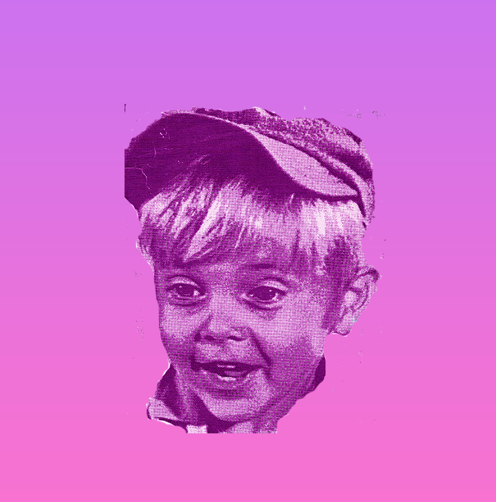
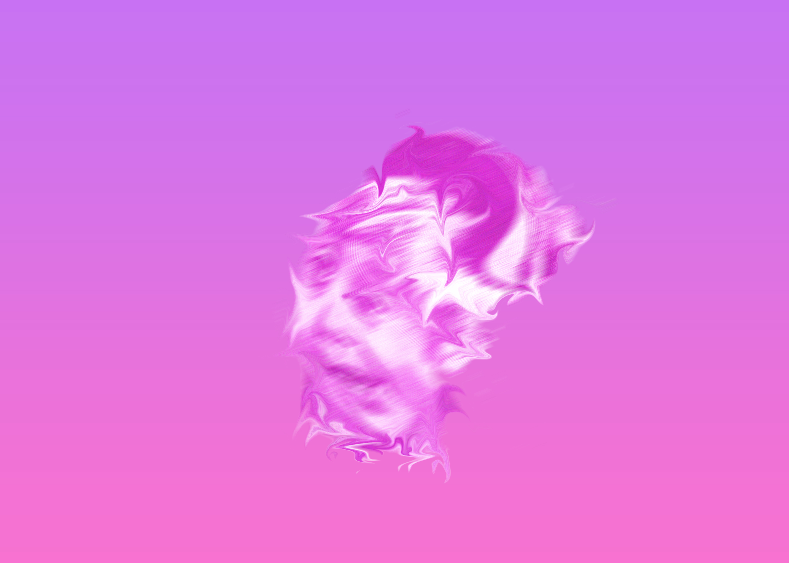

Expectations Photoshop Assignment
Criteria 2: An example of how you made a choice related to color, fonts, captions, scale, or other aspects of the visual mode
My Expectations photoshop assignment is my strongest visual piece. I really hit my stride when working on this piece in photoshop. I became accustomed to adding layers, cropping pictures, isolating specific parts of an image, and using various filters. With my last revision of this piece, I wanted to make it more psychedelic and trippier. In a different circumstance, I would adjust the design elements to be more distorted and a bit darker. Right now, the tone of my piece is sort of fun and silly. To make the tone darker, I would use a blood red color with splashes of black and instead of shades of purple. I would use different distortions and filters and maybe some body horror-type designs to change the tone of the design.
 